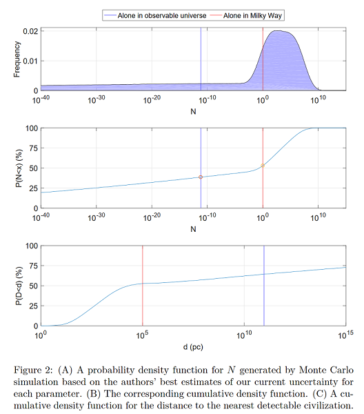
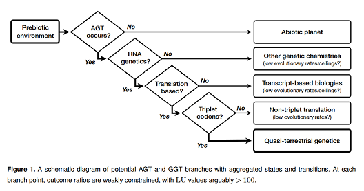

2018년 7월 3일
게시가 좀 늦었지만, 그럼에도 공유할 가치가 충분할 만큼 중요한 글이다: 페르미 역설의 해소에 관한 샌드버그, 드렉슬러, 오드의 논의(Sandberg, Drexler, and Ord on Dissolving the Fermi Paradox).
(이 이름들이 낯익을 수도 있겠다. 토비 오드(Toby Ord)는 효과적 이타주의 운동을 창시했고, 에릭 드렉슬러(Eric Drexler)는 나노기술에 대한 관심을 불러일으켰으며, 안데르스 산드버그(Anders Sandberg)는 실존적 위험(x-risk)에 대한 학술적 연구를 개척하는 데 기여했고, 내가 가장 좋아하는 언송(Unsong) 팬픽일지도 모를 글을 썼다.)
페르미 역설(Fermi Paradox)은 다음과 같이 묻는다. 우리 은하에 존재하는 별들의 수가 엄청나다는 점을 고려할 때, 별 하나당 외계인이 존재할 확률이 아주 희박하더라도 인근에 수천 개의 외계 문명이 있어야 하지 않을까? 하지만 수백만 년 전에 탄생한 외계 문명이라면 은하계를 식민화하거나, 그 존재를 의심할 여지가 없을 만큼 극적인 일을 벌이기에 충분한 시간이 있었을 것이다. 그렇다면 그들은 다 어디에 있는가?
이는 때때로 드레이크 방정식(Drake Equation)으로 공식화된다. 외계 문명이 우리와 접촉하기 위해 필요할 모든 변수를 생각하고, 그 변수들에 대한 최선의 추정치들을 모두 곱해 우리가 예측하는 외계 문명이 얼마나 될지 확인하는 식이다. 예를 들어, 각 항성이 행성을 가질 확률이 10%, 각 행성이 생명체가 살기에 적합할 확률이 10%, 그리고 생명 거주 가능 행성에서 현재까지 외계 문명이 탄생했을 확률이 10%라고 가정한다면, 천 개의 항성 중 하나에는 문명이 존재해야 한다. 실제 드레이크 방정식은 훨씬 더 복잡하지만, 대부분의 변수에 대해 우리가 추정한 최선의 값들을 대입하면 우리가 관찰하고 있는 이 텅 빈 은하계가 나타날 확률은 극히 희박하다는 점에 대부분이 동의한다.
SDO의 공헌은 이것이 잘못된 사고방식이라는 점을 지적한 데 있다. 레딧(subreddit)에 올라온 스니프노이(Sniffnoy)의 댓글 덕분에 정확히 어떤 일이 벌어지고 있는지 이해할 수 있었는데, 요지는 대략 다음과 같다.
신이 동전을 던졌다고 가정해 보자. 앞면이 나오면 신은 100억 개의 외계 문명을 만들었고, 뒷면이 나오면 지구 외에는 아무것도 만들지 않았다. 단 하나의 매개변수만 사용하는 드레이크 방정식(Drake Equation)을 적용하면, 평균적으로 50억 개의 외계 문명이 존재해야 한다는 결론이 나온다. 그런데 정작 우리 눈에 보이는 것은 단 하나도 없으니, 이거 정말 엄청난 역설이지 않은가?
아니다. 이 경우에는 평균값이 아무런 의미가 없다. 외계 문명이 단 하나도 발견되지 않는다는 사실은 전혀 놀라운 일이 아니며, 이는 단지 동전의 뒷면이 나왔음을 의미할 뿐이다.
SDO는 드레이크 방정식(Drake Equation)에 의존하는 것이 이와 동일한 종류의 오류라고 말한다. 우리가 관심을 갖는 것은 외계 문명 수의 평균이 아니라, 외계 문명 수에 따른 확률 분포다. 특히, 문명이 거의 없거나 아예 없을 확률은 얼마나 되는가?
SDO는 이를 '합성 점추정치(synthetic point estimate)' 모델로 해결한다. 연구 커뮤니티가 제시한 가능한 추정치들의 분포에서 무작위로 지점들을 선택해 시뮬레이션을 여러 번 실행한 뒤, 서로 다른 값들이 얼마나 자주 반환되는지 확인하는 방식이다.
그들의 계산에 따르면, 모든 매개변수에 대한 최선의 추정치를 곱하는 표준 드레이크 방정식(Drake Equation)을 적용했을 때 우리가 은하계에 홀로 존재할 확률은 100경(10^24)분의 1보다 낮게 나온다. 이러한 관찰 결과는 상당히 역설적이다. 반면 매개변수의 불확실성을 고려한 SDO의 자체 방식으로는 그 확률이 3분의 1로 계산된다.
그들은 자신이 선호하는 수치들을 사용하여 직접 드레이크 방정식(Drake calculation)을 계산해 보았고, 다음과 같은 결과를 얻었다.

만약 이것이 맞다면—정확한 매개변수 값에 대해서는 영원히 논쟁할 수 있겠지만, 점추정치 대 분포의 논리(point-estimate-vs-distribution-logic)라는 그들의 논거에 반박하기는 어렵다—페르미 역설(Fermi Paradox)은 존재하지 않는다. 상황 종료, 해결, 끝이다. "페르미 역설의 해소(Dissolving The Fermi Paradox)"라는 그들의 제목은 강한 주장 같지만, 내가 보기에 그들은 그럴 만한 자격이 충분하다.
“왜 전에는 아무도 이걸 생각하지 못했을까?”라는 질문을 던지려니, 정작 나 역시 전에는 생각하지 못했다는 사실에 약간의 민망함이 밀려온다. 모르겠다. 어쩌면 누군가 이미 생각했지만 발표하지 않았거나, 내가 모르는 곳에 발표했을지도 모른다. 혹은 사람들이 직관적으로 상황을 파악했지만(드레이크 방정식(Drake Equation)의 매개변수 중 하나가 우리의 추정치보다 훨씬 낮을 것이라는 점), 거기서 멈춘 채 굳이 정식 확률 논거를 설명하려 들지 않았을 수도 있다. 아니면 어차피 아무도 드레이크 방정식을 진지하게 받아들이지 않았고, 그저 생명체 탄생 확률을 논하기 위한 시작점으로만 사용해 온 것일까?
하지만 "아, 이건 이미 다들 어느 정도 알고 있었던 사실이야"라는 식의 설명이 설득력을 얻으려면, 매우 똑똑하고 화려한 경력을 가진 수많은 전문가가 페르미 역설(Fermi Paradox)을 매우 진지하게 다루며 온갖 기괴한 설명들을 내놓았다는 점을 먼저 해결해야 한다. 이제 더 이상 공상과학적 이론은 필요 없다 (물론 어둠의 숲 3부작(the Dark Forest trilogy)은 여전히 읽어볼 만하지만). 그냥 외계인이 별로 없는 것뿐이다. 이 주제에 대한 나의 과거 추측들은 매우 불완전하고 최근의 논문에 비하면 훨씬 수준이 떨어지지만, 여기서 꽤 괜찮게 정리되었다고 생각한다.
(레스 롱(Less Wrong)의 여기에서 더 많은 논의가 이어졌다)
부록에 숨겨진 또 다른 핵심 내용은 다음과 같다. 지적 생명체가 형성되지 못하는 다양한 방식에 관한 긴 논의 도중, 저자들은 6페이지부터 "대안적 유전 체계(alternative genetic systems)"에 대해 추측한다. 만약 어떤 행성의 생명체가 우리와는 약간 다른 방식으로 유전자를 부호화한다면, 그 체계는 너무 불안정해서 복잡한 생명체가 나타날 수 없거나, 반대로 너무 안정적이어서 자연 선택에 의한 적절한 속도의 돌연변이가 일어날 수 없을지도 모른다. 어쩌면 자연발생(abiogenesis)은 매우 취약한 유전 코드만을 만들어낼 수 있으며, 생명체가 복잡한 진화가 가능한 수준에 도달하기 위해서는 여러 번의 "유전-유전 전이(genetic-genetic transitions)" 과정을 거쳐야 할 수도 있다. 만약 이것이 경로 의존적이라면—즉, 국소적인 개선은 이루어지지만 더 나은 다른 유전 체계로 가는 길을 차단하는 분기점이 존재한다면—이는 생명체의 발전을 영구적으로 저지하거나, 진화 속도를 너무 낮게 고착시켜 지금까지의 우주 역사만으로는 복잡한 유기체를 관찰하기에 시간이 너무 부족하게 만들 수 있다.

내가 이 모든 내용을 다 이해한다고 주장하는 것은 아니지만, 이해한 부분들만으로도 충분히 매혹적이며 그 자체로 별도의 논문이 될 수 있을 정도다.
Please provide the English text you would like me to translate. You have provided the header and a placeholder, but the actual paragraph to be translated is missing.
재에서 재로(Asches to Asches)홈(Home)도서 리뷰: 초지능의 재구성(Book Review: Reframing Superintelligence)
제시해주신 텍스트가 없습니다. 번역할 내용을 입력해 주세요.